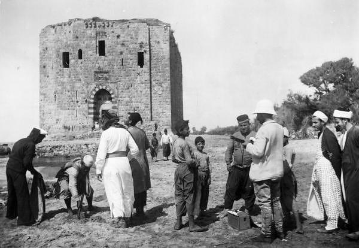
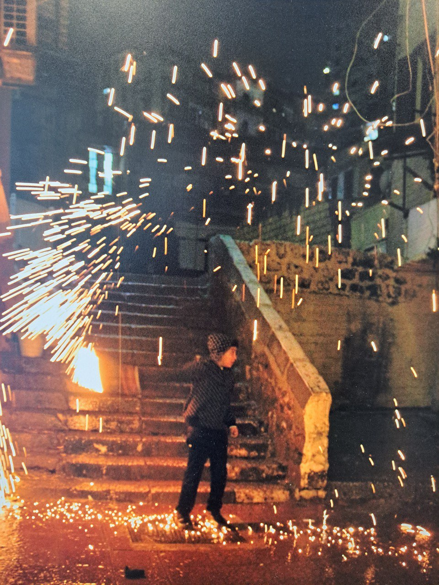
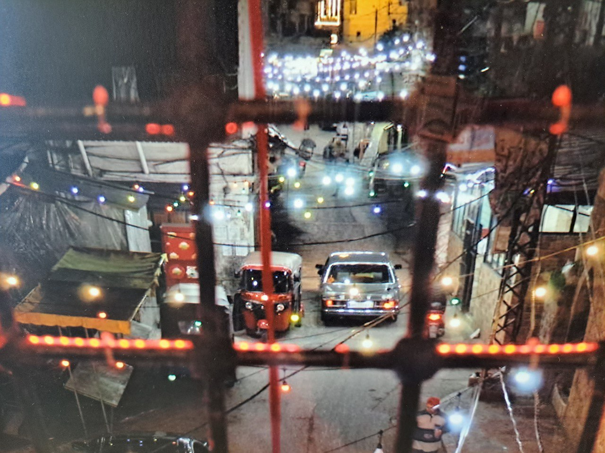
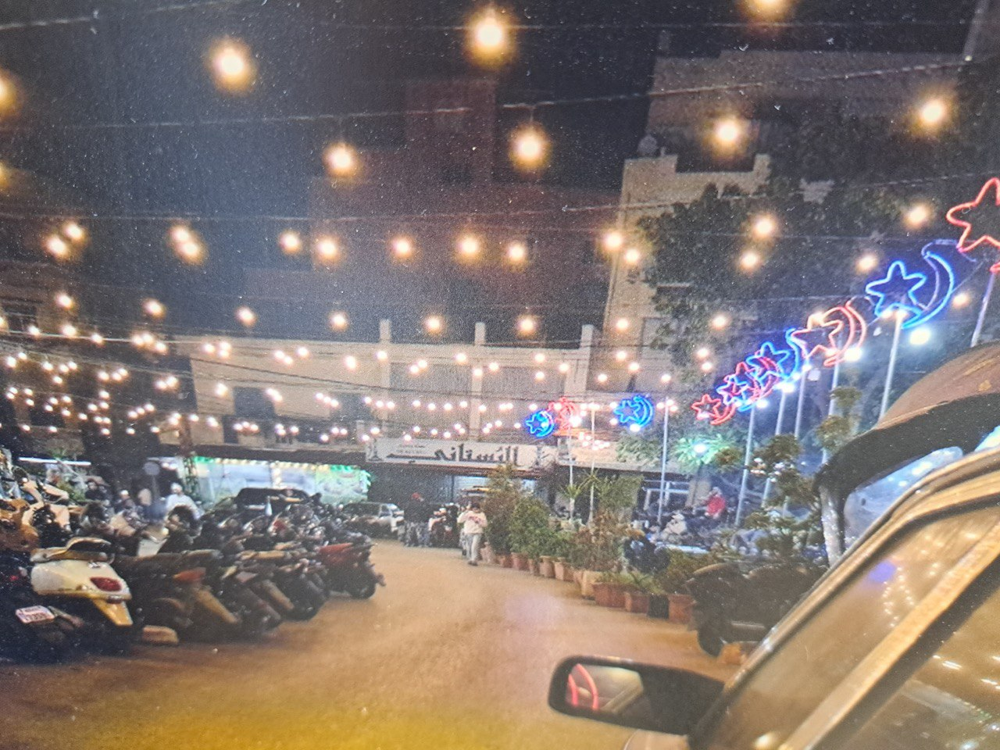
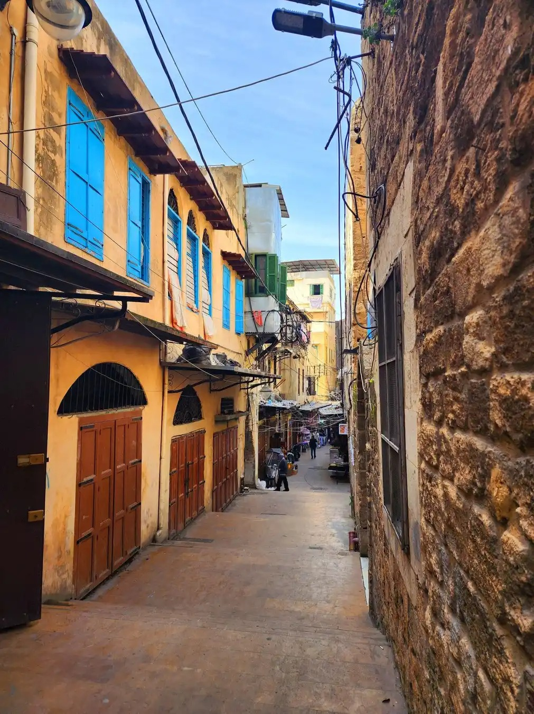

عاصمة الحلويات
رحلة في عالم المذاق الطرابلسي الأصيل، حيث تتوارث العائلات أسرار النكهة منذ مئات السنين.
حلويات طرابلس الشهيرة
صناعة الحلويات هنا ليست مهنة، بل فن يتوارثه الأبناء عن الآباء.

كنافة الجبن
أشهر حلويات طرابلس الصباحية، تُقدم ساخنة مع الكعك الطرابلسي الخاص وقطر السكر.
المكونات: جبنة عكاوي، سميد، سمنة، فستق حلبي

سمبوسة بالعجوة
عجينة رقيقة محشوة بالتمر المتبل والمكسرات، من أساسيات الضيافة في الأعياد.
المكونات: طحين، عجوة، جوز، سمن بلدي

حلاوة الجبن
حلوى طرية ومطاطية محشوة بالقشطة الطازجة وتذوب في الفم، تُزين بزهر الليمون.
المكونات: جبنة، سميد، ماء زهر، قشطة

مدلوقة
قاعدة من السميد المحمص بالسمن والقطر، تعلوها طبقة غنية من القشطة والمكسرات.
المكونات: سميد، قشطة بلدية، فستق، لوز
الطبخ الطرابلسي الأصيل
الكبة الطرابلسية
تتنوع بين المقلية والمشوية بالصينية، وتتميز بتتبيلتها الخاصة من نعناع وسبع بهارات.
المغربية والحمص
أطباق شعبية غنية، حيث يُطبخ الحمص الشامي بأسلوب مميز ويقدم مع الكمون والزيت البلدي.
التبولة الشمالية
تختلف قليلاً عن تبولة بيروت بزيادة نسبة البرغل الخشن والاعتماد على دبس الرمان.
المطاعم والأسواق الشهيرة

شارع الإسكندر
شارع يضج بالحياة ويضم أعرق مطاعم الفول والحمص والفتة.
سوق العطارين
حيث تختلط روائح التوابل والأعشاب، وتجد أقدم محلات العطارة التي تورّد للمطاعم بهاراتها السرية.
الميناء (الكورنيش)
موطن مطاعم المأكولات البحرية الطازجة التي تأتي مباشرة من شباك الصيادين.
قهوة طرابلس .. طقس يومي
القهوة في طرابلس ليست مجرد مشروب، بل هي طقس اجتماعي يجمع الناس في ساحات المدينة وعلى الكورنيش. من القهوة العربية المطحونة مع الهيل والمغلية على نار هادئة، إلى "قهوة الحليب" المرافقة لكعكة الصباح.

